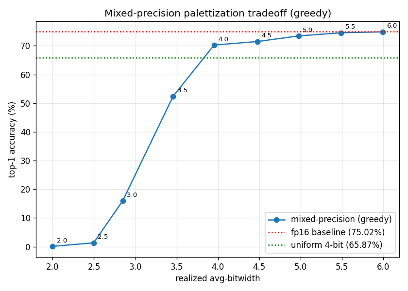

Mixed-precision palettization with ResNet50¶
In this article we walk through the Mixed-Precision Compression workflow applied to ResNet50 weight palettization. We use 2/4/6-bit per-tensor palettization as our candidate configs, PSNR on logits as the sensitivity metric, and generate the recipe with the greedy approach targeting 4 bits-per-weight (BPW). See the linked page for definitions of each term and the three-stage workflow.
Model and dataset¶
We apply palettization to a pretrained ResNet50 (IMAGENET1K_V1 weights) from torchvision.
The model has 54 conv and linear layers — these are the weights we palettize.
We draw data samples from the ImageNet validation set: 2560 images for sensitivity computation and the full 50,000-image validation set for top-1 evaluation. All accuracy numbers reported below are measured using PyTorch with mps backend.
Baseline¶
The pretrained model at fp16 gives us a top-1 eval accuracy of 75.02%.
Uniform 4-bit palettization¶
The simplest compression strategy is to apply the same per-tensor 4-bit lookup table (LUT) to every layer. This gives us roughly a 4x reduction in model size going from 16-bit precision to 4-bit precision, plus a small overhead for storing the lookup table itself.
We build a uniform config by setting a single global_config that applies to every palettizable layer, then run k-means palettization and use the prepared model directly for evaluation.
import torch
from coreai_opt.palettization import (
KMeansPalettizer,
KMeansPalettizerConfig,
ModuleKMeansPalettizerConfig,
PalettizationSpec,
)
from coreai_opt.palettization.spec import PerTensorGranularity
cfg = KMeansPalettizerConfig(
global_config=ModuleKMeansPalettizerConfig(
op_state_spec={
"weight": PalettizationSpec(n_bits=4, granularity=PerTensorGranularity()),
},
),
)
palettizer = KMeansPalettizer(model, cfg)
palettized_model = palettizer.prepare(example_inputs=(torch.randn(1, 3, 224, 224),))
Top-1 accuracy on the eval set: 65.87%.
Mixed-precision compression¶
For this example we use 2/4/6-bit per-tensor palettization as our candidate configs for every layer.
Layer-wise sensitivity computation¶
To compress a single layer in isolation, we set global_config=None and add a module_name_configs entry that targets only that layer’s fully qualified name. For example, palettizing only conv1 at 2 bits:
cfg = KMeansPalettizerConfig(
global_config=None,
module_name_configs={
"conv1": ModuleKMeansPalettizerConfig(
op_state_spec={
"weight": PalettizationSpec(
n_bits=2, granularity=PerTensorGranularity()
),
},
),
},
)
The fully qualified names used as module_name_configs keys (e.g. "conv1", "layer1.0.conv1", "fc") come from iterating model.named_modules() and keeping the modules supported for palettization.
For ResNet50 this produces 54 entries — 53 conv layers plus the final fc linear.
We run this for every (layer, candidate config) pair and score each candidate against the baseline with PSNR to yield a sensitivity table. The first five layers look like this:
Layer |
Config |
Size (KB) |
Sensitivity (PSNR) |
|---|---|---|---|
|
2-bit |
2.31 |
22.79 |
|
4-bit |
4.66 |
31.64 |
|
6-bit |
7.14 |
44.27 |
|
2-bit |
1.02 |
31.89 |
|
4-bit |
2.06 |
44.98 |
|
6-bit |
3.25 |
55.60 |
|
2-bit |
9.02 |
36.42 |
|
4-bit |
18.06 |
47.21 |
|
6-bit |
27.25 |
57.06 |
|
2-bit |
4.02 |
35.17 |
|
4-bit |
8.06 |
48.50 |
|
6-bit |
12.25 |
59.20 |
|
2-bit |
4.02 |
28.24 |
|
4-bit |
8.06 |
40.45 |
|
6-bit |
12.25 |
52.55 |
Higher PSNR means lower sensitivity — that bitwidth distorts the layer’s output less.
Recipe generation¶
We run the greedy recipe generation on the sensitivity table with a target BPW of 4, which assigns all 54 layers and realizes a BPW of 3.95.
The bitwidth distribution is:
2 layers at 6-bit (most sensitive):
conv1,layer1.0.downsample.050 layers at 4-bit
2 layers at 2-bit (least sensitive):
layer1.1.conv1,layer3.4.conv2
Results¶
Comparing against the FP16 baseline and uniform 4-bit:
Configuration |
BPW |
Size (MB) |
Top-1 accuracy |
|---|---|---|---|
FP16 baseline |
16 |
48.64 |
|
uniform 4-bit |
4 |
12.16 |
|
mixed precision (target 4) |
3.95 |
12.03 |
|
At a slightly lower BPW than uniform 4-bit, mixed precision lifts top-1 accuracy from 65.87% to 70.27% — recovering more than four percentage points of the gap to the FP16 baseline — by spending its bit budget on the layers that are more sensitive.
Accuracy vs BPW graph¶
We sweep the target BPW from 2 to 6 to trace out the curve below.

The inflection sits at around 4.0 realized BPW: below it, every additional 0.5 BPW buys us 15-35 percentage points of accuracy; above it, gains drop to 1-2 points per 0.5 BPW as the curve flattens toward the FP16 baseline.
Summary¶
At the same model size, mixed-precision palettization significantly narrowed the gap to the FP16 baseline compared to uniform 4-bit palettization.